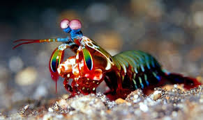

Mantis Shrimp are sea crustaceans that are incredibly impressive. The Mantis shrimp has a lifespan of 3-6 years, and averages a length of 10 centimeters but some can even reach lengths of 38 centimeters! The mantis shrimp can be recognized by its gorgeous outer shell, and their calcified clubs. Those clubs are normally used to kill their prey or open hard shells, but how strong are they? One punch from those powerful clubs has the same acceleration as a .22 caliber rifle. It is so fast and strong it is capable of producing bubbles and boils water around them. And they are so used to their power, their clubs contain some special shock-absorbent core that stops them from breaking.
Regardless of their beauty, mantis shrimp are also known to be pretty aggressive and territorial towards intruders.

Facts
Their beauty isn't the only thing that is impressive about them, they also are capable of astonishing things. To ease you in, how many color receptors do you have? humans typically have three, green, blue, and red. Dogs have two. Butterflies have five, green, blue, red and two more that we can't see. But what about mantis shrimp? How many do they have? well, mantis shrimp don't have two. Or three. Not even five. But rather SIXTEEN color receptors. That means that in places where we see complete darkness they would see an atomic bomb of color!